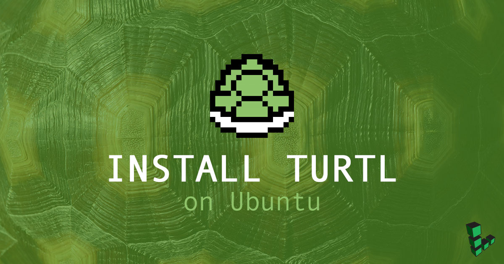
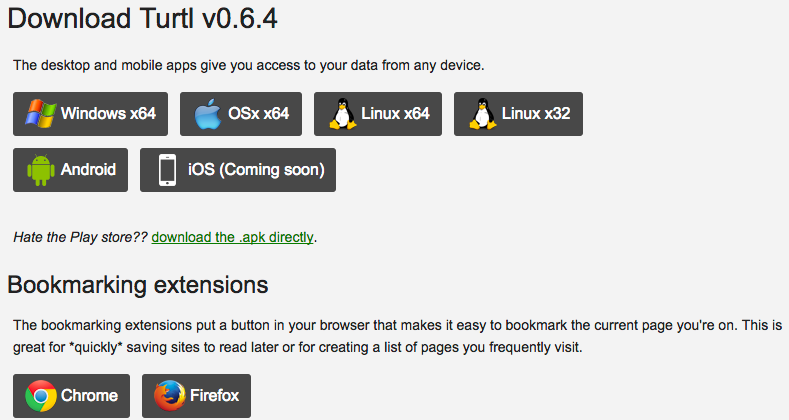
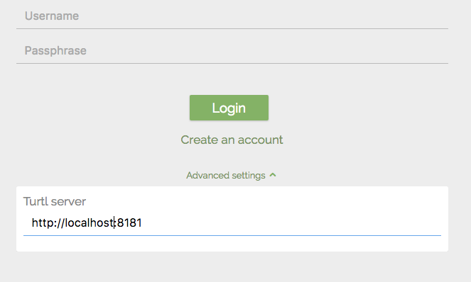

How to Install a Turtl Server on Ubuntu
Updated by Linode Written by Angel Guarisma

Turtl is an open-source alternative to cloud-based storage services. With a focus on privacy, Turtl offers a place to store and access your passwords, bookmarks and pictures. Hosting your own Turtl server on a secure Linode allows you to monitor your own security.
The Turtl server is written in Common Lisp, and the low-level encryption is derived from the Stanford JavaScript Crypto Library. If encryption is important to you, read over the encryption specifics section of the official documentation.
Before You Begin
Familiarize yourself with our Getting Started guide and complete the steps for setting your Linode’s hostname and timezone.
This guide will use
sudowherever possible. Complete the sections of our Securing Your Server to create a standard user account, harden SSH access and remove unnecessary network services. Do not follow the Configure a Firewall section yet. This guide includes firewall rules specifically for an OpenVPN server.Update your system:
sudo apt update && sudo apt upgrade
Install Dependencies:
The Turtl server has to be built from source. Download all of the dependencies as well as git:
apt install wget curl libtool subversion make automake git
Libuv, RethinkDB, Clozure Common Lisp, QuickLisp:
Libuv
Download the Libuv package from the official repository:
wget https://dist.libuv.org/dist/v1.13.0/libuv-v1.13.0.tar.gz
tar -xvf libuv-v1.13.0.tar.gz
Build the package from source:
cd libuv-v1.13.0
sudo sh autogen.sh
sudo ./configure
sudo make
sudo make install
After the package is built, run sudo ldconfig to maintain the shared libracy cache.
RethinkDB
RethinkDB is a flexible JSON database. According to the Turtl documentation, RethinkDB just needs to be installed; Turtl will take care of the rest.
RehinkDB has community-maintained packages on most distributions. On Ubuntu, you have to add the RethinkDB to your list of repositories:
source /etc/lsb-release && echo "deb http://download.rethinkdb.com/apt $xenial main" | sudo tee /etc/apt/sources.list.d/rethinkdb.list
wget -qO- https://download.rethinkdb.com/apt/pubkey.gpg | sudo apt-key add -
Navigate to your sources.list folder and add your version of Ubuntu:
vi /etc/apt/sources.list.d/rethinkdb.list
deb http://download.rethinkdb.com/apt xenial main
Update apt and install RethinkDB:
sudo apt update
sudo apt install rethinkdb
Navigate to /etc/rethinkdb/ and rename default.conf.sample to default.conf
sudo mv /etc/rethinkdb/default.conf.sample /etc/rethinkdb/default.conf
Restart the rethinkdb.service daemon:
sudo systemctl restart rethinkdb.service
Clozure Common Lisp
For this installation you will need to install Clozure Common Lisp (CCL):
svn co http://svn.clozure.com/publicsvn/openmcl/release/1.11/linuxx86/ccl
According to the CCL documentation, you can replace linuxx86 with another platform, like solarisx86.
Quickly check if CCL has been installed correctly by updating the sources:
cd ccl
svn update
Move ccl to /usr/bin so ccl can run from the command line:
cd ..
sudo cp -r ccl/ /usr/local/src
sudo cp /usr/local/src/ccl/scripts/ccl64 /usr/local/bin
Now, running ccl64, or ccl depending on your system, will launch a Lisp environment:
linode@localhost:~$ ccl64
Welcome to Clozure Common Lisp Version 1.11-r16635 (LinuxX8664)!
CCL is developed and maintained by Clozure Associates. For more information
about CCL visit http://ccl.clozure.com. To enquire about Clozure's Common Lisp
consulting services e-mail info@clozure.com or visit http://www.clozure.com.
To exit the environment type (quit).
QuickLisp and ASDF
Create a user named turtl:
adduser turtl
su turtl
QuickLisp is to Lisp what pip is to Python. Turtl loads its dependencies for the server through Quicklisp. ASDF is a tool that builds Lisp software.
wget https://beta.quicklisp.org/quicklisp.lisp
ccl64 --load quicklisp.lisp
The successful execution of the above steps will open the CCL environment with the following output:
==== quicklisp quickstart 2015-01-28 loaded ====
To continue with installation, evaluate: (quicklisp-quickstart:install)
For installation options, evaluate: (quicklisp-quickstart:help)
Welcome to Clozure Common Lisp Version 1.11-r16635 (LinuxX8664)!
CCL is developed and maintained by Clozure Associates. For more information
about CCL visit http://ccl.clozure.com. To enquire about Clozure's Common Lisp
consulting services e-mail info@clozure.com or visit http://www.clozure.com.
Once you are in the CCL environment, install QuickLisp using:
(quicklisp-quickstart:install)
After the install finishes, add Quicklisp into your init file.
(ql:add-to-init-file)
After confirming the settings, Quicklisp will start when ccl64 starts. (quit) out of CCL for now.
Download ASDF:
wget https://common-lisp.net/project/asdf/asdf.lisp
Load and install asdf.lisp in your CCL environment:
ccl64 --load quicklisp.lisp
(load (compile-file "asdf.lisp"))
(quit)
Install Turtl
Clone Turtl from the Github repository:
git clone https://github.com/turtl/api.git
Create a file called launch.lisp inside /api and copy the commands below:
touch launch.lisp
vi launch.lisp
(pushnew "./" asdf:*central-registry* :test #'equal)
(load "start")
Turtl does not ship with all of its dependencies. Instead, the Turtl community provides a list of dependencies. Clone these into /home/turtl/quicklisp/local-projects:
echo "https://github.com/orthecreedence/cl-hash-util https://github.com/orthecreedence/cl-async https://github.com/orthecreedence/cffi https://github.com/orthecreedence/wookie https://github.com/orthecreedence/cl-rethinkdb https://github.com/orthecreedence/cl-libuv https://github.com/orthecreedence/drakma-async https://github.com/Inaimathi/cl-cwd.git" > dependencies.txt
for repo in `cat dependencies.txt`; do `git clone $repo`; done
Edit the /home/turtl/.ccl-init.lisp to include:
(cwd "/home/turtl/api")
(load "/home/turtl/api/launch")
The first line tells Lisp to use the cl-cwd package that you cloned to change the current working directory to /home/turtl/api. You can change this to anything, but your naming conventions should be consistent. The second line loads your launch.lisp, loading asdf so that Turtl can run.
Create the default Turtl configuration file:
cp /home/turtl/api/config/config.default.lisp /home/turtl/api/config/config.lisp
The config.lisp file is where the configurations for your server are stored. If you want to connect to your Linode from a Turtl desktop or mobile client, you need to add the Linode’s public IP address to:
(defvar *site-url* "http://1.0.0.0:8181"
"The main URL the site will load from.")
Go to your home directory and run ccl64. This will automatically start the Turtl server.
On your local device, download a client app for Turtl from the turtl website for supported devices and operating systems.

Put your public facing IP address (or http://localhost:8181 if running locally) when prompted and create a username.

You now have a functioning Turtl server. Add files, store passwords, and save bookmarks in your own private Turtl instance.
Next Steps
Turtl does not have much official documentation. Fred C has created an install guide for Turtl on Debian that is also very helpful for making it work on Ubuntu 16.10. Take a look at the Turtl Google Group, and Fred C’s guide:
Join our Community
Find answers, ask questions, and help others.
This guide is published under a CC BY-ND 4.0 license.